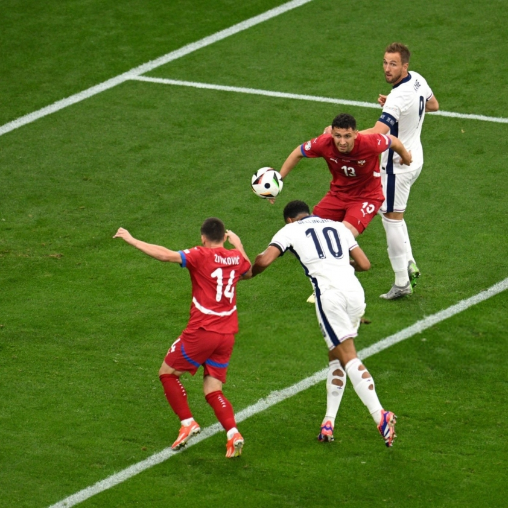
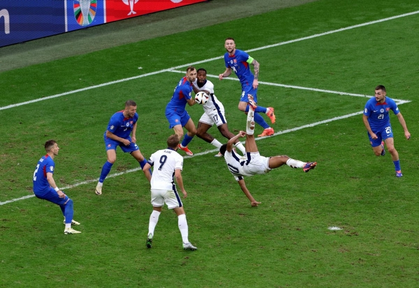
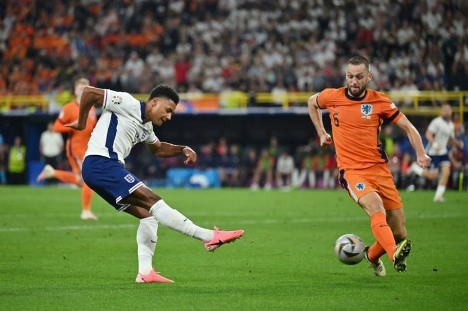
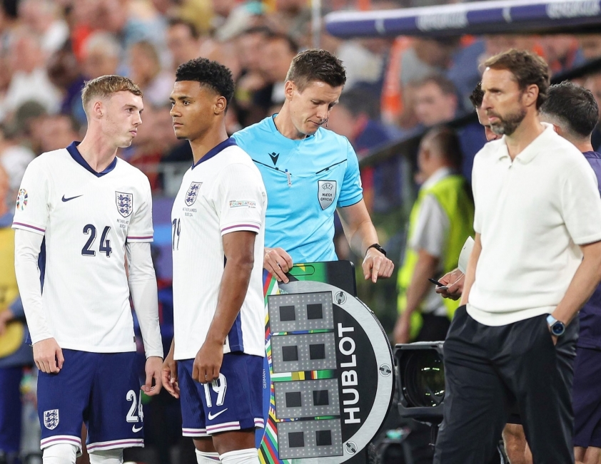

Đường đến chung kết Euro 2024 của ĐT Anh
edit by C&H
Thursday 11 July 2024 21:15
ĐT Anh đã chứng minh bản lĩnh của mình tại Euro 2024, dù thi đấu không thực sự thuyết phục nhưng Southgate và các học trò biết cách để đưa đội bóng đến trận đấu cuối cùng trên đất Đức.
ĐT Anh được đánh giá là ứng cử viên hàng đầu cho chức vô địch trước khi Euro 2024 diễn ra. Dẫu vậy hành trình của tuyển Anh trên đất Đức không diễn ra dễ dàng như mong đợi.
Dù sở hữu dàn sao giá trị số 1 giải đấu nhưng Southgate tỏ ra khó khăn trong việc gắn kết Tam Sư thành 1 khối gắn kết. Tuy nhiên từng bước từng bước 1 tuyển Anh vượt qua khó khăn và đưa mình đến trận đấu cuối cùng. Hãy cùng chúng tôi nhìn lại hành trình đầy chông gai tiến tới trận chung kết Euro 2024 của Tam Sư hè này.
Chật vật ở bảng C
Tam Sư bước vào Euro 2024 với tư cách là đội được yêu thích nhất sau khi hoàn thành vòng loại với thành tích bất bại ở Bảng C. Họ được xếp vào Bảng C Euro 2024 cùng với Serbia, Đan Mạch và Slovenia.
Anh 1-0 Serbia
Đây không phải là một màn trình diễn xuất sắc của Tam Sư, nhưng họ đã làm rất tốt trong việc tìm về 3 điểm. Một bàn thắng sớm của Jude Bellingham là đủ giúp Anh làm được điều đó. Có những lời xì xào bất bình rằng Anh đã để Serbia chơi lấn lướt, tuy nhiên kết quả là điều quan trọng nhất.

Cú đánh đầu dũng mãnh của Bellingham
Anh 1-1 Đan Mạch
Giống như trận đấu với Serbia, Anh đã khởi đầu tốt và dẫn trước, lần này là nhờ công Harry Kane. Nhưng không giống như trận đấu với Serbia, Đan Mạch đã vùng lên gỡ hòa và thậm chí đứng trước cơ hội giành chiến thắng . Đó là một trận đấu đã làm giảm đi rất nhiều sự lạc quan xung quanh đội tuyển Anh và Southgate đã đứng trước làn sóng chỉ trích lớn.
Anh 0-0 Slovenia
Trên lý thuyết, đây là trận đấu dễ nhất của vòng bảng đối với đội tuyển Anh và họ sẽ chào đón trận đấu này như trận đấu cuối cùng của vòng bảng. Đội tuyển Anh kiểm soát bóng 74% nhưng chỉ có bốn cú sút trúng đích và rõ ràng là không ghi được bàn thắng nào. Một trận đấu bế tắc toàn tập, dẫu vậy 1 điểm ít ỏi cũng đủ giúp Anh xếp nhất bảng C và thoát khỏi nhánh đầu tử thần.
Vòng Knockout đầy bản lĩnh
-Vòng 1/8: Anh 2-1 Slovakia (Sau 120 phút)
Anh phải chờ đợi đối thủ ở vòng 16 đội cuối cùng, cuối cùng Tam Sư phải đối đầu với đội đứng thứ ba của Bảng E là Slovakia. Và tưởng như Tam Sư đã phải xách vali về nước thì giây cuối cùng Jude Bellingham ghi bàn gỡ hòa đáng kinh ngạc ở phút thứ 95. Ngay sau đó tiếp đà hưng phán Harry Kane đã ghi bàn ấn định chiến thắng sát sao 2-1 cho Tam Sư trong hiệp phụ.

Bellingham ghi siêu phẩm giúp tuyển Anh thoát hiểm phút cuối
-Tứ kết: Anh 1-1 Thụy Sĩ (Penalty 5:3)
Anh đánh bại Thụy Sĩ, ngựa ô của giải đấu trên chấm penalty. Đây là trận đấu thứ 2 tại vòng Knock out Anh để đối thủ vươn lên dẫn trước. Tuy nhiên tuyển Anh dường như chỉ thi đấu tốt khi bị dẫn bàn.Sau bàn thua, Anh lập tức vùng lên và Bukayo Saka tỏa sáng để ghi bàn gỡ hòa 1-1 để đưa trận đấu vào hiệp phụ. Ở chấm penalty Anh thể hiện bản lĩnh khi sút thành công cả 5 quả, cộng với sự xuất sắc của Pickford, Tam Sư đã vượt qua Thụy Sĩ để tiến vào bán kết.
-Bán kết: Anh 2-1 Hà Lan
Đối thủ của Anh ở bán kết là Hà Lan - đội mà Anh đã tránh được ở vòng 16 đội. Anh bị dẫn trước chỉ sau phút thứ bảy nhưng quả phạt đền của Harry Kane và bàn thắng quyết định ở phút thứ 90 của Ollie Watkins đã đảm bảo suất vào chung kết. Một lần nữa trận đấu này Anh bị vượt lên, tuy nhiên như đã nói Anh đã có một vòng Knockout đầy bản lĩnh. Tuyển Anh giành chiến thắng ở đúng phút 90 của trận đấu.

Cú dứt điểm của Watkins giúp tuyển Anh giành chiến thắng phút cuối
Tài Cầm Quân Của Gareth Southgate đưa tuyển Anh thăng hoa
Gareth Southgate rất trung thành với sơ đồ 4-2-3-1/4-3-3, tuy nhiên trong những trận đấu cuối ông đã chuyển sang chơi sơ đồ 3-4-3 khi kéo Saka xuống thấp hơn vị trí của Foden.
Bên cạnh đó trong trận đấu đầu tiên Southgate cho Arnold thi đấu ở vị trí tiền vệ, sự thay đổi của Southgate dường như đã bị đổ bể. Vì vậy bước vào trận đấu thứ 2 ông có sự thay đổi khi để Arnold lên băng ghế dự bị và cho Gallagher vào sân. Tuy nhiên một lần nữa kế hoạch của Southgate không diễn ra như mong muốn. Không bảo thủ, Southgate tiếp tục hướng đến sự thay đổi ở trận đấu cuối cùng vòng bảng, lần này cái tên Mainoo 19 tuổi đã được lựa chọn. Và rồi dường như đây là chìa khóa giúp chiến lược gia 54 tuổi cân bằng được đội hình của Tam Sư.
Bên cạnh đó cũng phải nhắc tới tài thay người đỉnh cao của Southgate, hai sự thay đổi người thần thánh trong trận đấu giữa Anh vs Slovakia và Anh vs Hà Lan đã giúp tuyển Anh vượt khó ở những giây phút cuối cùng.

Tình huống thay người ấn tượng của Southgate trước Hà Lan
Trước Slovakia, Southgate cho Toney vào sân ở phút 90+4, ngôi sao của Brentford ngay lập tức đóng góp 1 kiến tạo giúp Kane ấn định tỷ số 2-1 cho Tam Sư. Trước Hà Lan ở bán kết, Southgate tung bộ đôi Watkins và Palmer vào sân, chỉ sau 9 phút trên sân bộ đôi này đã cùng nhau tạo nên bàn thắng bùng nổ ở phút 90 giúp Anh đánh bại Cơn lốc màu da cam và tiến vào chung kết.
Người ta hay nói vui rằng 'chết hụt thường sống dai', tuyển Anh được coi đang nắm trong tay chân mệnh thiên tử, hãy cùng chờ xem Southgate và các học trò có viết tiếp câu chuyện lịch sử cùng ĐT Anh hay không. Trận đấu chung kết giữa Anh vs Tây Ban Nha sẽ diễn ra vào lúc 2h00 ngày 15/7 theo giờ Việt Nam.